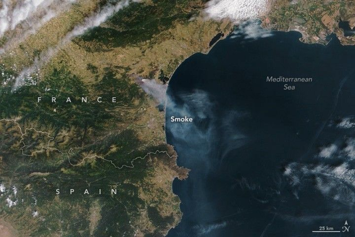

Wildfire Sweeps Through Southern France
A large wildland fire burned through forests, agricultural land, and villages in the Aude department of southern France in August 2025. The blaze spread amid hot, dry, and windy conditions, quickly growing to span an area larger than Paris.
The Aude fire ignited on the afternoon of August 5 in the town of Ribaute. By the afternoon of August 6, the fire had burned 16,000 hectares (40,000 acres), affecting 15 municipalities, according to reports issued by the Prefecture of Aude.
The MODIS (Moderate Resolution Imaging Spectroradiometer) on NASA’s Terra satellite acquired this natural-color image at about 11:20 a.m. local time (09:20 Universal Time) on August 6, as winds carried smoke southeast over the Mediterranean Sea.
About an hour later, the OLI-2 (Operational Land Imager-2) on Landsat 9 captured a detailed false-color image. The combination of shortwave infrared, near infrared, and visible light (bands 6-5-4) cuts through the smoke to reveal the recently burned landscape (brown). Vegetated areas appear green, while bright orange indicates the infrared signature of active burning.
In the false-color satellite image, the burned area appears as a brown patch running diagonally across the scene, surrounded by green vegetation. Several red spots dot the burned area, marking zones of active fire.
The deadly fire injured more than a dozen people, including firefighters, and destroyed dozens of homes, according to the Emergency Response Coordination Centre. News reports noted that some of the most affected towns included Tournissan, Coustouge, and Saint-Laurent-de-la-Cabrerisse. Jonquières was also reported to have sustained substantial damage.
As of 8 p.m. local time on August 7, an update from the Prefecture of Aude reported that the burned area remained at 16,000 hectares and that the blaze was contained. It has become the largest single fire in France in more than half a century, according to news reports. In August 1949, the Landes Forest fire in southwestern France devastated approximately 50,000 hectares (120,000 acres).